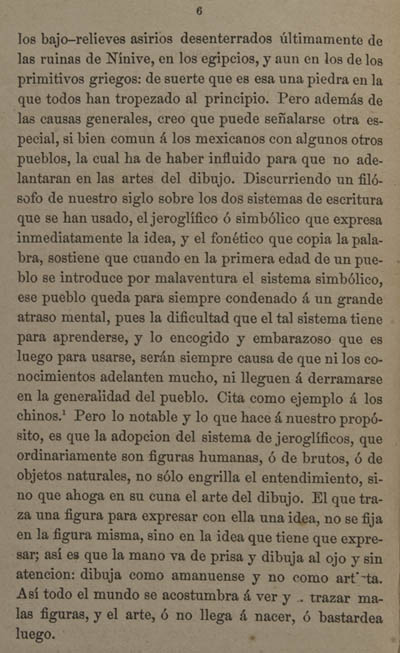

|
 |
los bajo-relieves asirios desenterrados últimamente de las ruinas de Nínive, en los egipcios, y aun en los de los primitivos griegos: de suerte que es esa una piedra en la que todos han tropezado al principio. Pero además de las causas generales, creo que puede señalarse otra especial, si bien comun á los mexicanos con algunos otros pueblos, la cual ha de haber influido para que no adelantaran en las artes del dibujo. Discurriendo un filósofo de nuestro siglo sobre los dos sistemas de escritura que se han usado, el jeroglífico ó simbólico que expresa inmediatamente la idea, y el fonético que copia la palabra, sostiene que cuando en la primera edad de un pueblo se introduce por malaventura el sistema simbólico, ese pueblo queda para siempre condenado á un grande atraso mental, pues la dificultad que el tal sistema tiene para aprenderse, y lo encogido y embarazoso que es luego para usarse, serán siempre causa de que ni los conocimientos adelanten mucho, ni lleguen á derramarse en la generalidad del pueblo. Cita como ejemplo á los chinos.1 Pero lo notable y lo que hace á nuestro propósito, es que la adopcion del sistema de jeroglíficos, que ordinariamente son figuras humanas, ó de brutos, ó de objetos naturales, no sólo engrilla el entendimiento, sino que ahoga en su cuna el arte del dibujo. El que traza una figura para expresar con ella una idea, no se fija en la figura misma, sino en la idea que tiene que expresar; así es que la mano va de prisa y dibuja al ojo y sin atencion: dibuja como amanuense, y no como artista. Así todo el mundo se acostumbra á ver y á trazar malas figuras, y el arte, ó no llega á nacer, ó bastardea luego.
|
| |
1 | 2 | 3 | 4 | 5 | 6 | 7 | ... | 105 | Siguiente |
||
| Arriba |
||||||||||||